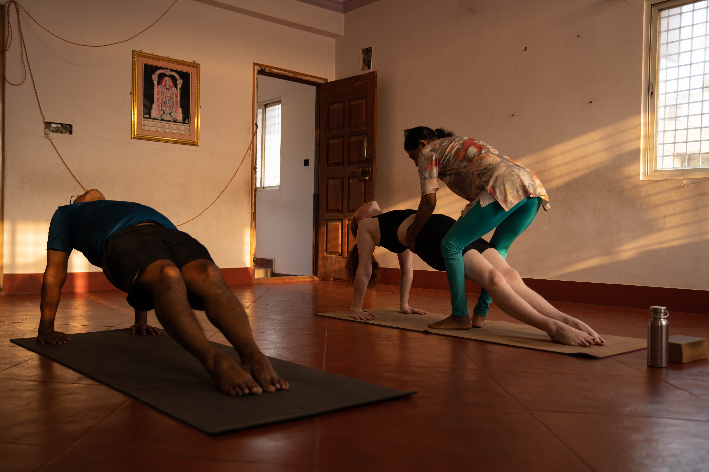
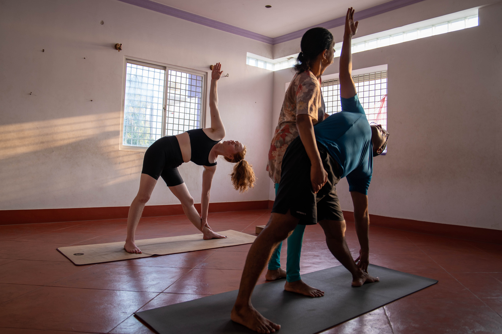
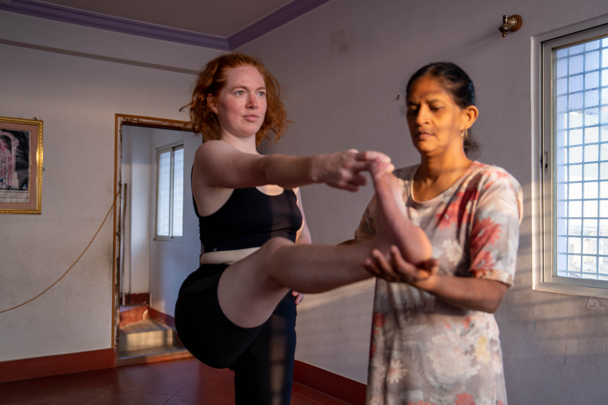
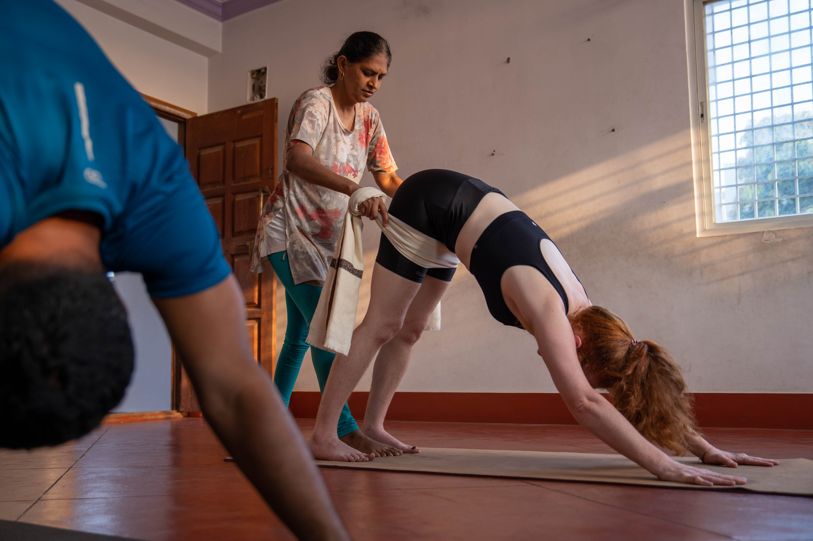
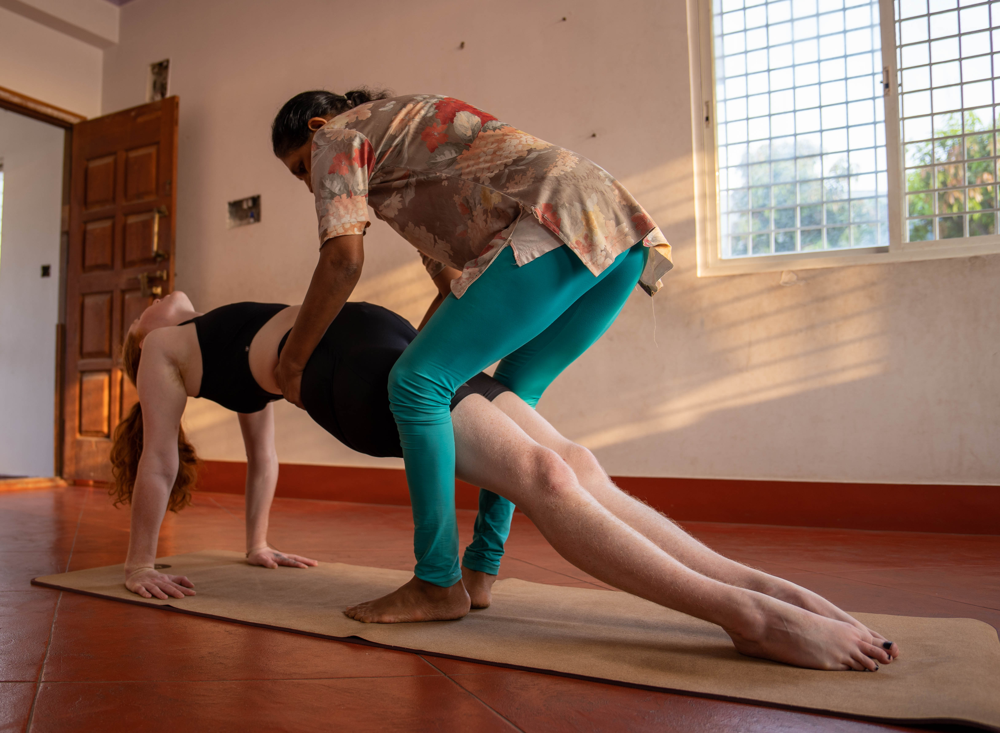

Browse through our gallery showcasing various yoga adjustment techniques taught by Shashikala at the Three Sisters Yogashala.
Each adjustment is carefully applied to help students improve their alignment and deepen their practice.

Purvottanasana Adjustment
Precise adjustment of the extended triangle pose to help align the spine and elongate the torso,
creating space for proper rotation and breath.

Trikonasana Refinement
Adjusting the foundation of triangle pose ensures proper grounding through the feet
while encouraging the proper extension through the arms and lateral sides of the body.

Padangusthasana Adjustment
Hands-on guidance for forward bending with proper hamstring engagement, protecting the lower back
while increasing flexibility in the posterior chain.

Adho Mukha Svanasana Alignment
Downward facing dog adjustment focuses on creating the proper shoulder-to-hip angle while encouraging
grounding through the palms and lengthening through the spine.

Standing Posture Refinement
Subtle adjustments to standing postures create a foundation for the entire practice,
teaching students body awareness and proper alignment principles.